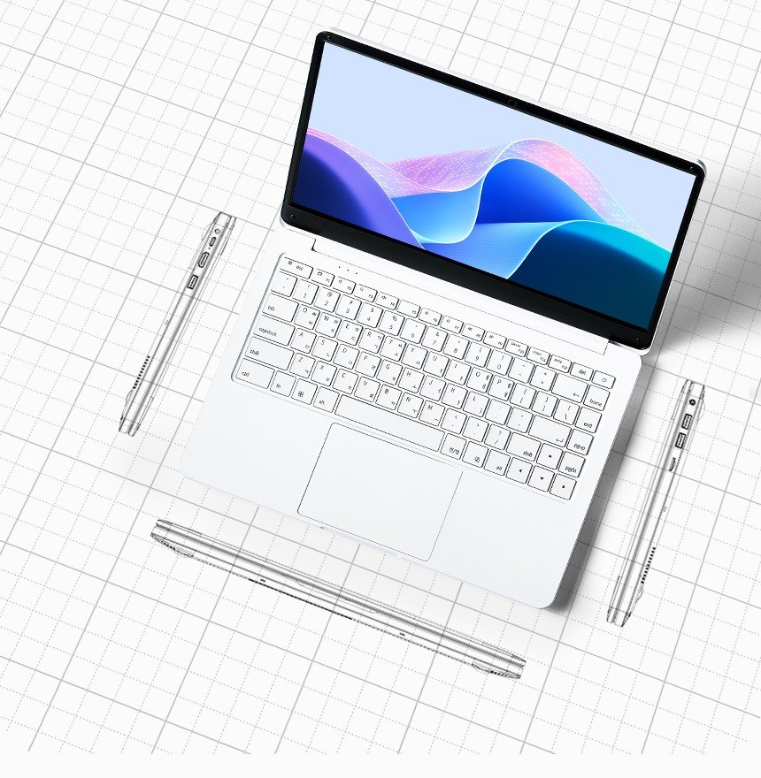
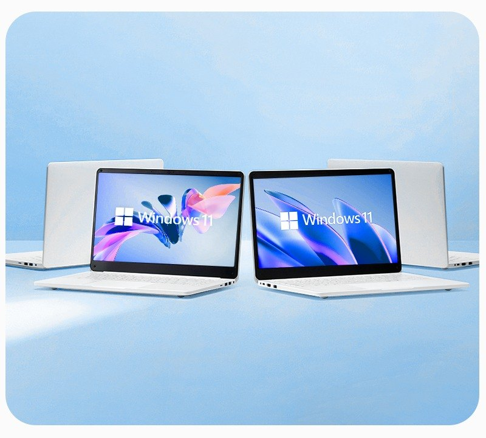
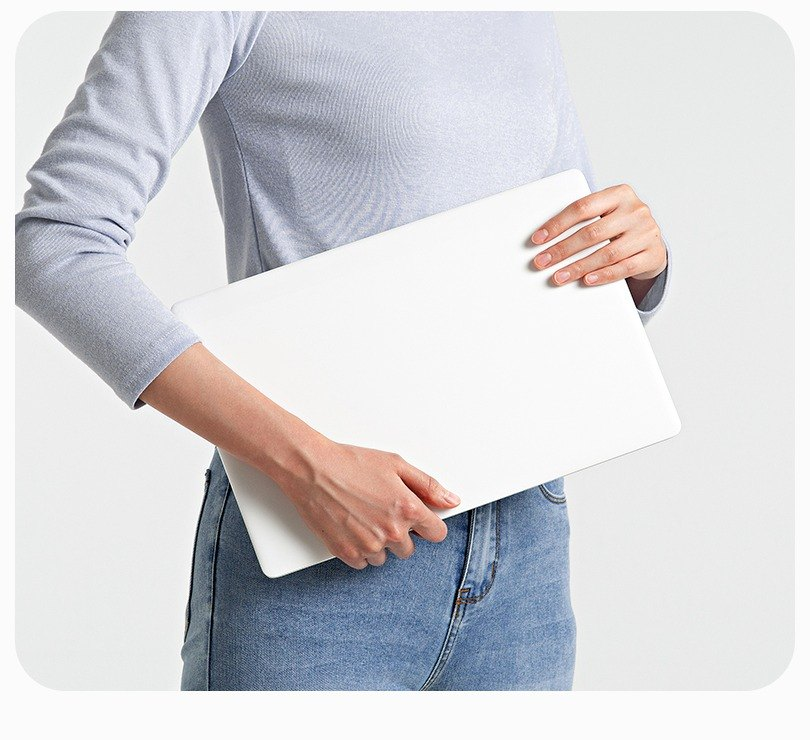
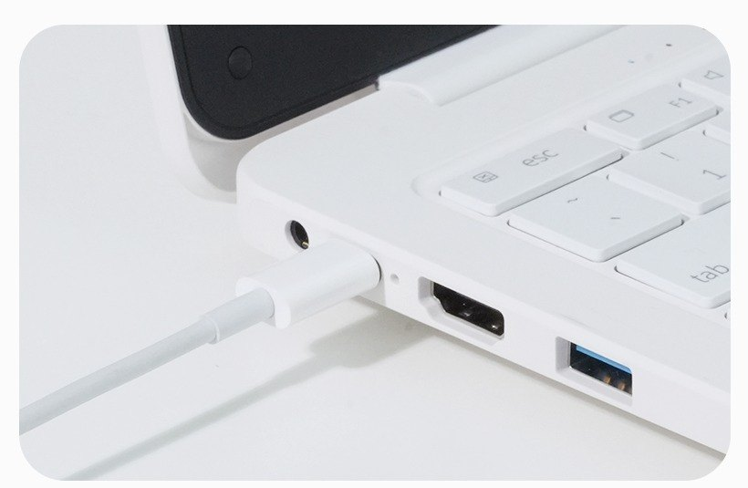
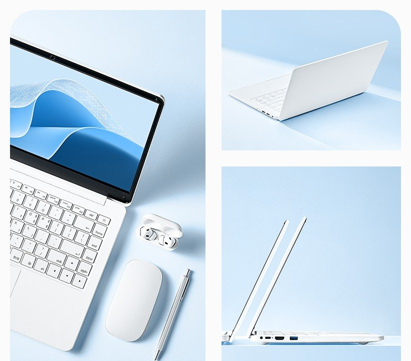

Basics Basicbook14 Review: Overview
This Basics Basicbook14 review looks at one of Korea's best-selling budget laptops. The Basicbook14 is a 14.1-inch Windows 11 laptop from Basics, a Seoul brand that sells mostly online. The current version pairs an Intel N95 processor with 8GB of memory and a 256GB SSD, weighs about 1.4 kg and is aimed squarely at office work, online classes and everyday browsing.
The Basics Store listing on Naver Shopping Connect that we checked (8GB / 256GB) was priced at 598,000 KRW when collected on October 27, 2026, against a 959,000 KRW list price, and Basics' own store showed the same price in late November 2026. The Naver listing showed about 4.8 / 5 from more than 14,000 buyer reviews, and Basics says it was the top-selling single laptop model on Coupang and Naver in January 2026. We checked the specs against the product notice on Basics' official store. We did not run our own benchmarks, so this review is based on the maker's data and owner reviews.
"A plain, honest work-and-study laptop at a low price. Just don't expect it to game, edit video or last all day."

Performance: Intel N95 and 8GB Memory
The Intel N95 is a four-core, four-thread chip that boosts up to 3.4GHz, with Intel UHD Graphics. Basics says it is 31.6% faster than the previous Basicbook14 in a PassMark CPU test (5,376 against 4,084 points) and that graphics run about 60% faster. That is plenty for Word and Excel files, web apps, Zoom calls and video, and Basics says three to five programs at once run smoothly.
Owner reviews match that picture. Many say it opens documents and YouTube quickly and feels fine for daily work; a few say it slows down with a lot of tabs or larger programs, which is what you would expect from 8GB of memory. If you plan to keep dozens of tabs open, the 16GB / 512GB version costs more but gives more room.

Display, Design and Ports
The 14.1-inch anti-glare IPS screen has a full-HD resolution and wide viewing angles. It is fine for documents and video, but some owners say the colours look a little dull compared with pricier laptops. The body is plain Basic White with no logo on the lid, and at about 1.4 kg it is light enough to carry to class or a café.
Ports are a strong point for the price: two USB-A 3.0, one USB-A 2.0, one USB-C (charging and video output), a full-size HDMI, a microSD slot, a headphone jack and a DC power jack. Basics says you can run two external monitors using HDMI and USB-C together. The webcam is only 0.3MP, so video calls look soft.


Battery, Charging and After-Sales Service
Inside is a 38Wh (7.6V, 5,000mAh) battery with a 12V 3A (36W) charger in the box. Basics doesn't give a battery-life figure, and short battery life is the most common complaint in owner reviews, so plan to charge it during the day. You can also charge it over USB-C, but only with a PD charger that supports 12V and gives at least 45W.
Basics handles repairs itself. You contact the Basics channel on KakaoTalk, a courier collects the laptop and it is repaired at the company's own service centre. The standard warranty is one year; some bundles add a longer plan, so check the option name before you buy.

Key Specs
| Spec | Basics Basicbook14 (8GB / 256GB) |
|---|---|
| Processor | Intel N95, 4 cores / 4 threads, up to 3.4GHz, 4MB L3 cache |
| Graphics | Intel UHD Graphics (16 execution units, up to 750MHz) |
| Display | 14.1-inch (35.8 cm) anti-glare IPS, FHD |
| Memory / storage | 8GB / 256GB SSD |
| Operating system | Windows 11 Home (included) |
| Ports | 2× USB-A 3.0, 1× USB-A 2.0, 1× USB-C 3.2 Gen 1 (PD charging, video), HDMI, microSD, 3.5mm audio, DC-in |
| Wireless | Wi-Fi 5 (802.11ac), Bluetooth 4.2 |
| Camera and audio | 0.3MP front camera, microphone, 2× 1W stereo speakers |
| Battery and charger | 38Wh (7.6V 5,000mAh); 12V 3A (36W) charger |
| Weight / colour | About 1.4 kg / Basic White |
| In the box | Laptop, charger, keyboard skin |
| Maker / origin | Sold by Basics Co., Ltd. (Seoul); made by Shenzhen NST Industry and Trade, China |
| Korean price | 598,000 KRW at the Basics Store on Naver (collected Oct 27, 2026) |
Specs come from the product notice on Basics' official store; the price comes from the Naver Shopping Connect listing. Performance figures are Basics' own claims, and we did not benchmark the laptop ourselves.
How It Compares
| Basics Basicbook14 (this) | Basicbook14 16GB / 512GB | Typical mid-range 14-inch laptop | |
|---|---|---|---|
| Processor | Intel N95 | Intel N95 | Intel Core i5 / AMD Ryzen 5 |
| Memory / storage | 8GB / 256GB | 16GB / 512GB | 16GB / 512GB |
| Best for | Documents, classes, video | Heavier multitasking | Photo editing, long battery life |
| Weight | About 1.4 kg | About 1.4 kg | 1.2–1.5 kg |
| Korean price | 598,000 KRW | Higher | About 1,000,000 KRW and up |
Pros & Cons
| Pros | Cons |
|---|---|
| Low price with Windows 11 Home included | Short battery life is the top owner complaint |
| Light 1.4 kg body in clean white | 8GB slows down with many tabs or big programs |
| Full-size HDMI, USB-C and three USB-A ports | Screen colours look dull to some owners |
| Dual-monitor support via HDMI and USB-C | 0.3MP webcam; no Microsoft Office |
| 4.8 / 5 from 14,000+ owner reviews; KakaoTalk repair service | Korean keyboard and Korean after-sales only |
Who It Suits (and Who Should Skip It)
- Yes: Students who need a laptop for online lectures, notes and assignments.
- Yes: Office workers and home users doing documents, email, spreadsheets and video calls.
- Yes: Anyone wanting a light, low-cost second laptop to carry around.
- No: Gamers, video editors and anyone running 3D or heavy design software.
- No: People who need all-day battery life or buyers outside Korea; look for a similar 14-inch Windows laptop sold locally.
Basics Basicbook14 FAQ
What is the Basics Basicbook14?
It is a budget 14.1-inch Windows 11 laptop sold by Basics (베이직스), a Seoul-based laptop and tablet brand. The current version uses an Intel N95 processor with 8GB of memory and a 256GB SSD, weighs about 1.4 kg and comes in white. Basics designs and sells it in Korea; the label lists a Shenzhen factory as the maker and China as the country of origin.
Is the Basicbook14 good enough for work and online classes?
For documents, web browsing, video calls, online lectures and streaming, yes. Basics says it handles three to five programs at once. It is not built for gaming, 3D or heavy video editing, and owners say 8GB fills up if you keep many browser tabs open.
Can the Basicbook14 charge over USB-C?
Yes, its USB-C port supports charging and video output, but Basics says you need a PD charger that supports 12V and gives at least 45W. A normal phone charger may not charge it, and the battery can still drain while plugged in.
Does the Basicbook14 come with Microsoft Office?
No. It ships with Windows 11 Home, but Microsoft Office is not included. Basics sells separate bundles that add a permanent Hancom Office licence. In the box you get the laptop, its charger and a keyboard skin.
Can I buy the Basicbook14 in the U.S.?
It is sold in Korea through the Basics store, Naver and Coupang, with a Korean keyboard and Korean after-sales service. The Amazon button on this page searches for similar 14-inch Windows 11 laptops with an Intel N95, 8GB and 256GB sold in the U.S.
14-Inch Windows 11 Laptop (Intel N95, 8GB / 256GB)
The Basicbook14 is sold in Korea with a Korean keyboard. Similar 14-inch Windows 11 laptops with an Intel N95, 8GB and 256GB are sold in the U.S. under other brands; compare current listings on Amazon.